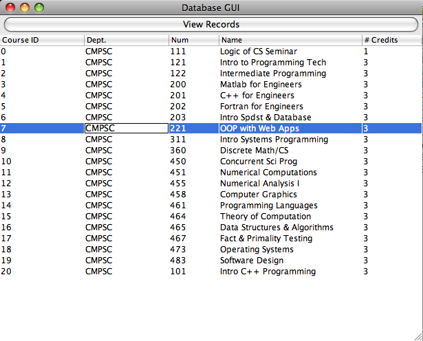

Last Modified 4/25/12
More on ResultSets • JTable, Part I • JTable, Part II • More Database Issues
Last week, we looked at the ResultSet, the fundamental object returned to Java when we execute a query.
First, it's worth reviewing the ResultSet API entry for more accessors and modifiers which let you move the cursor around, should you want to.
Of particular interest is a class called ResultSetMetaData, which gives us information about the result set. We can use a ResultSet accessor as follows to get the meta data:
ResultSet results = stmt.executeQuery(testQuery); ResultSetMetaData metaData = results.getMetaData();
Here are some of the accessors we can call on the ResultSetMetaData object:
More on ResultSets • JTable, Part I • JTable, Part II • More Database Issues
A final GUI component worth mentioning is the table, implemented as JTable. Tables are a natural way of displaying database results. We might modify the last lab with a GUI that looks something like this:

We could implement very simple tables or very complicated tables. We'll look at a simple example below. Tables have behind them a table model, of which a default is provided. I encourage you to read through Sun's tutorial on JTables for all of the details. Some of you may find you want to go with tables for a feature in your final project and will find this tutorial helpful.
More on ResultSets • JTable, Part I • JTable, Part II • More Database Issues
Here we'll look at the code for creating a basic JTable to display some query results. I've built this code in an application that extends JFrame. Its constructor doesn't do anything regarding the table; rather I'm placing all of this code for creating and displaying the table in an event handler.
First off, we need the following import statement for a table:
import javax.swing.JTable;
We'll first need variables to execute the query:
String testQuery;
Statement stmt;
ResultSet results;
To create the table, we'll need two arrays. First, we need an array of the column headers (which I've treated like a typical constant):
private static final String[] COLS =
{"Course ID", "Dept.", "Num", "Name", "# Credits"};
The second array is a two-dimensional array of the data that will go in the table. We can't send a null array in, so we'll construct it as follows:
Object[][] data = new Object[MAX_ROWS][MAX_COLS];
Now we'll construct the empty table from these arrays, and add it to the GUI. Notice a few things:
Here's the code, with table-specific code in color:
JPanel tablePanel = new JPanel(new BorderLayout()); JTable table = new JTable(data, COLS); add(new JScrollPane(table)); tablePanel.add(table.getTableHeader(), BorderLayout.NORTH); tablePanel.add(table, BorderLayout.CENTER); add(tablePanel, BorderLayout.CENTER); validate();
Next we execute the query and get our result set object as before:
testQuery = "select * from courses";
stmt = myConnection.createStatement();
results = stmt.executeQuery(testQuery);
Now we can use the setValueAt modifier on the table to change it. Its general form is:
tableObject.setValueAt(newValue, rowIndex, columnIndex);
So, we might do something like this:
while(results.next())
{
table.setValueAt(results.getInt("course_id"), row, 0);
table.setValueAt(results.getString("dept"), row, 1);
table.setValueAt(results.getInt("number"), row, 2);
table.setValueAt(results.getString("name"), row, 3);
table.setValueAt(results.getInt("credits"), row, 4);
row++;
}
Finally, we'd do some cleanup:
results.close();
stmt.close();
More on ResultSets • JTable, Part I • JTable, Part II • More Database Issues
If you're interested in learning more about databases, consider taking CMPSC 431W. (CMPSC majors: This is one of the two options you have to fulfill your writing-intensive course requirement.)
This section gives a high-level overview of two advanced concepts.
In practice, SQL statements that make changes to the database are grouped into transactions. If a transaction changes the database in desired ways, then one can commit the transaction to make the changes permanent. But if the transaction proves erroneous, it's possible to rollback the transaction, restoring the database to its state before the transaction.
Whenever we insert data into the database, there's no defined order to the information and searching is analogous to a linear search. As we get large tables, performance degrades. We can address this problem by creating indexes to the database, which help the DBMS execute queries faster. The index helps the DBMS search for records without looking at all the records, if it's deemed that using the index will speed up searches.
More on ResultSets • JTable, Part I • JTable, Part II • More Database Issues